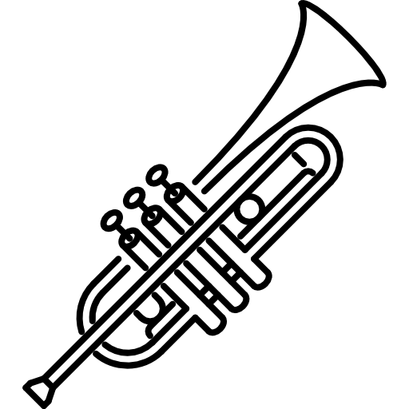
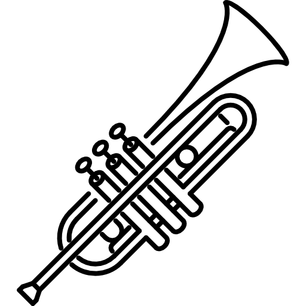

Nuestra comida se encuentra inspirada en platillos mexicanos
típicos pero no tan comúnes.
Para que nuestros cliente tengan el gusto de comer en cualquier
momento su comida favorita sin necesidad de esperar las temporadas
de cada platillo.

Contamos con diferentes promociones dependiendo la temporada,
tenemos reservaciones para eventos familiares incluyendo grupo de mariachi,
tenemos descuentos para el día de tu cumpleaños y contamos con cupones sopresas,
presentamos promociones al pagar con tarjeta de crédito.
Para mayor información sobre las reservaciones para eventos familiares
es necesario mandar whatssap en el número que se encuentra en la parte inferior
izquierda.
* Los fines de semana contamos con servicio acompañado de música mexicana
en vivo, así mismo bailables para que puedas disfrutar durante tu comida.
* Tenemos espacios exclusivos donde solo podrán asisitir y disfrutar las reservaciones
echas para cualquier tipo de eventos familiares o cenas románticas, incluyendo grupo
de mariachi.
* En tu cumpleaños te ofrecemos una pieza de seranata gratis además de las mañanitas.

En esta sección contamos con una sección de fotografías, donde son reales de nuestro restaurant desde como son los platillos y comida, bebidas, eventos y de como se encuentra estructurado.
El "Mariachi Mexicano" está conformado por pura familia desde los cocineros,
grupos musicales de mariachi y bailarinas. Los meseros y otros trabajadores,
también son familia pero algunos son personas externas.
El negocio fue creado por Amado Chávez y Carmelita Martínez, originarios
de León Guanajuato, en 1920 ellos llegaron a la CD. de México ya con algunos de sus
hijos.
Amado era mariachi y tocaba la trompeta, busco un grupo, muchos años después
a Carmelita se le ocurrio poner una fonda, conforme empezaron a crecer sus hijos
la mayor parte de ellos hombre empezaron a prepararse para ser maricahis pero ellos
agarraron el instrumento el violin y las hijas mujeres practicaban el baile típico mexicano. Conforme fueron creciendo empezaron a dar espectaculos en la fonda de Carmelita y así fue como creció el negocio y se volvió en un lugar exclusivo. Ahora se conforma de hijos, nietos y bisnietos, tan solo de hijos de Amado y Carmelita fueron 10 de los cuales 9 son lo que siguen la tradición de la mpusica mexicana, posicionarlo uno de ellos se formo con una licienciatura el cual ayuda a administrar este negocio familiar.


UBICACIÓN: Francos #21 Col. Casas Aleman

52+ 5538401296
Peláez Gema (PdGg)
Programación Web
 
